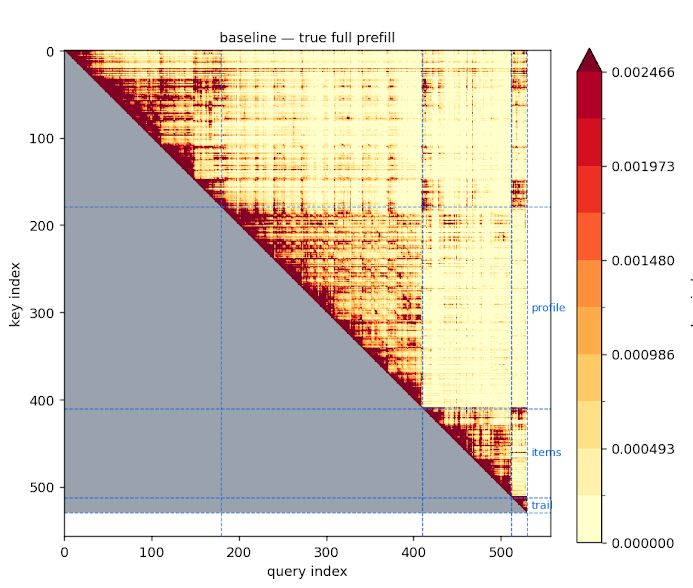

目录 · 5 节
1前缀缓存为什么无法跨不同前缀复用同一段画像2只把位置转过去，排序会掉一大截3更新画像时一并写出可复用的 KV4下一批的 KV 上传藏在当前计算后面5排序与完整预填充没有显著差距，吞吐主要来自打分通路同一段用户画像会被拼进不同前缀后面，前缀缓存无法跨这些前缀复用：KVUse 怎样把它改存成可复用的 KV
记忆增强的推荐系统会为每个用户维护一份自然语言画像。更新通路在新的互动到来时改写这份画像；打分通路读最新画像，给候选物品打相关性分数。两条通路都要调用大语言模型（LLM, large language model）。
麻烦出在存储方式。画像如果只存成文本，打分通路就要把它拼进提示词，并在预填充（prefill）阶段计算这段画像的键值（KV, key-value）缓存。同一用户一次打分的多个候选可以共享这次预填充，但更新通路算出的画像 KV 不能经前缀缓存接到打分通路，下一次访问仍要再预填充一遍。打分调用通常提示词长、解码短，而且比更新更频繁。论文在饱和负载、完整预填充下测量：打分通路大约 86% 的引擎时间花在预填充上，对应约 513 个输入 token 和 9 个输出 token；更新通路则大约 61% 花在解码上。所以，卡住吞吐的主要是打分通路里对同一段画像文本的反复预填充。
前缀缓存帮不上多少忙。它只有在某个 token 之前的提示词，与引擎已经算过的完全一致时，才能复用这段 KV。更新调用和打分调用里，同一段画像前面的文字并不相同。
前缀缓存为什么无法跨不同前缀复用同一段画像
论文附录给出了一对真实提示。更新通路的系统指令是：「You are a user preference analyst. Write concise, coherent profiles.」画像出现在「Current profile」一节，后面再接「New activity」里的新书，例如 Justice for Speedy: A True Horse Story。打分通路的系统指令换成：「You are a recommendation engine. Score each item for this user.」同一段画像出现在「User Preferences」里，后面再接「Items to Score」。例子里的画像都从这句起头：「This user is drawn to a diverse range of topics, from self-help and personal development to historical non-fiction and fiction.」并提到 You’re Not Crazy - It’s Your Mother。
两套系统指令不同，所以前缀缓存无法把更新调用里算出的画像或物品 KV，直接复用到打分调用里。这并不等于每次调用都要重算画像：完整预填充下，同一用户一次打分的 10 个候选仍可共享含画像在内的公共前缀。物品描述既出现在更新提示的新活动里，也出现在打分提示的候选表里，而且各候选的物品行不同，无法像画像那样在同一份候选列表里共享。

只把位置转过去，排序会掉一大截
把已经算好的 KV 拼到另一次调用里，会碰到两类误差。一类是位置。旋转位置编码（RoPE, Rotary Position Embeddings）会按产生这段 KV 时的位置旋转 key。这个误差可以精确消掉：把存下来的 key 再旋转「新位置相对原位置的角度差」，就能精确消掉 RoPE 带来的位置误差；value 没有位置编码，原样拷贝即可。
另一类是上下文。画像里每个 token 在写入时已经 attend 过当时的上文，并把这段上文烤进了自己的 KV。更新调用的上文是「你是偏好分析师，请改写画像」，打分调用的上文是「你是推荐引擎，请按画像打分」。位置转对了，上文却换了。 Hoot 说
下图用附录里那两套真实前缀，画出同一段画像 KV 接到打分提示后面时的两条路：只做位置重旋转，和在更新解码时打开 writer。数字是论文 Table 3 的 Amazon Books 第 0 轮，不是示意。
同一段画像、两套前缀 → 只旋转位置，上下文仍在 KV 里，NDCG@10 从 0.6152 落到 0.4564 → writer 写出可复用 KV 后为 0.5957
- 两套前缀同一段画像既出现在更新提示的 Current profile，也出现在打分提示的 User Preferences。前缀不同，前缀缓存无法把更新调用里的 KV 接到打分调用。
- 只旋转位置朴素复用只按位置差再旋转 key，value 原样拷贝。写入时看过的上文仍烤在这段 KV 里。
- 第 0 轮排序在 Amazon Books 第 0 轮，完整预填充的 NDCG@10 是 0.6152，朴素复用落到 0.4564。1 − 0.4564 / 0.6152 = 0.258，约 26%（论文 Table 3）
- writer 写出可复用 KV更新通路解码新画像时打开 LoRA writer，打分通路关闭 writer、只阅读存好的 KV。同一轮次上 KVUse 的 NDCG@10 是 0.5957，与完整预填充没有统计显著差别。

出处
提示词来自论文附录的更新与打分提示例子；NDCG@10 来自 Table 3，Amazon Books 第 0 轮，160 名留出用户。论文把只做精确位置重旋转、writer 保持零初始化的做法称为朴素 KV 复用。在 Amazon Books 的 160 名留出用户上，四轮记忆更新的归一化折损累计增益（NDCG, Normalized Discounted Cumulative Gain）@10，完整预填充是 0.6152、0.6128、0.6306、0.6255，朴素复用落到 0.4564、0.4491、0.4658、0.4559。正文把它概括为：Amazon Books 上每轮下降 26%–27%，另外三个数据集上下降 27%–32%。这说明，只修正位置不够，写入 KV 时必须考虑它稍后会被放进不同的上下文。
论文还用一次完整计算、不复用 KV 的更新调用注意力图作为动机：系统指令、画像、物品描述这三块内部的注意力更集中，跨块更稀疏。它把这写成「有可能按块复用预计算的 KV」。这只是动机，不是质量保证——上面的朴素复用已经说明，直接拼接仍会明显伤排序。

更新画像时一并写出可复用的 KV
KVUse 把用户记忆从文本换成 KV 存储，里面保存最新画像和物品描述的可复用 KV。两次 LLM 调用都直接读这些 KV，不再为对应文本做预填充。做法受此前的 SemPIC 启发：把「写出可复用 KV」和「阅读它」分开。骨干是冻结的 Llama-3.1-8B-Instruct。可复用 KV 的 writer 是打在每一层查询、键、值、输出投影上的低秩适应（LoRA, Low-Rank Adaptation）适配器，只在模型产生对应片段的 KV 时打开。阅读这些 KV 的是关掉全部 LoRA 的原模型，线上打分通路不会改骨干权重。
系统训练两类 writer：一类写用户画像，一类写物品描述。物品描述从位置零单独写出，这样一份物品 KV 可以跨用户、跨提示共享。服务时，更新通路在解码新画像时打开画像 writer，同时生成新画像的文本和 KV，并把这段新画像 KV 写入存储；打分通路关闭 writer，只阅读已经存好的画像 KV 和候选物品 KV，并只计算未被覆盖的少量后缀。系统指令仍可走 vLLM 或 SGLang 这类引擎自带的前缀缓存。论文写明，打开 writer 后解码出的画像文本和 KV，预期会与关闭 writer 的原模型输出不同，因为它优化的是减少下游打分质量下降，而不是复现原模型的逐字输出。
训练不需要人工标注。先用原模型做完整预填充，得到教师链路：为每个训练用户写初始画像，再按后续互动做三次更新，并对每轮的 10 个候选打分（1 个留出的真实互动和 9 个随机负例，候选在各轮保持不变）。学生路径复现一次完整样本：本次更新、读取这次新画像 KV 的打分调用、下一次更新。学生在相同前文上对齐教师的下一个 token 分布。各数据集单独训练 writer。

下一批的 KV 上传藏在当前计算后面
可复用 KV 平时放在主机内存里，计算前要传到 GPU。KVUse 的调度器把请求打成批次，用一条旁路流，在 GPU 还在算当前批次时，异步上传下一批要用的 KV。
论文把这写成可以把上传延迟完全藏在 GPU 计算之后。直接可核对的证据是一组对照：如果改成在每个引擎步进的关键路径上同步拷贝 KV，Amazon Books 打分通路相对完整预填充的加速比只有 3.40×（108.80 用户/秒）；把上传藏到当前计算后面后，加速比升到 3.96×（126.72 用户/秒）。四个数据集上，隐藏上传把打分通路的加速再提高 1.16×–1.20×。更新通路两边相差不大，因为相对解码画像，上传本身耗时更短。
排序与完整预填充没有显著差距，吞吐主要来自打分通路
实验用 InstructRec 四个域：Amazon Books、Goodreads、Amazon Movies & TV 和 Yelp，只用互动历史。Amazon Books 是主数据集，质量报告在 160 名历史足够支撑四轮记忆更新的留出用户上。对照是同一模型、同一块 AMD MI300X、vLLM 0.26，两边都开自动前缀缓存。完整预填充下，同一用户 10 个候选的打分提示可以共享含画像在内的公共前缀；KVUse 则从存储加载画像和物品行的 KV，只计算其余 token。
四轮平均下来，完整预填充的 NDCG@10 在四个数据集上分别是 0.621、0.617、0.659、0.665。KVUse 相对它的差是 +0.008、−0.001、+0.006、+0.008，说明这些平均差异都没有统计显著，单轮也没有显著的 NDCG@10 差异。Amazon Books 上，KVUse 与完整预填充的差值落在 −0.0195 到 +0.0246 之间，全部 p>0.10，说明这些轮次上的差异同样不显著。唯一偏低的是第 0 轮（−0.0195，p=0.153）。从第 1 轮起，差值转为中性或略正，而且仍然不显著。论文据此认为，误差没有沿着记忆链累积。朴素复用则做不到这一点。
打开 writer 后写出的画像措辞，也可能与完整预填充的文本不同。论文用 Gemini-3-Flash 比较 640 个用户-轮次的两份画像。其中 79.8% 被判为主要偏好等价，另有 14.5% 只在次要细节上不同，合计 94.4%（604/640），说明大多数画像在核心偏好上仍然对齐；剩下 5.6% 是部分重合，没有「大多不同」或「无关」的判决。这是大模型评判，不是人工逐条核对。
吞吐的主要收益在打分通路。饱和负载下，Amazon Books 的打分吞吐从 31.99 用户/秒升到 126.72（3.96×），平均引擎步进时间从 642 ms 降到 161 ms。另外三个数据集上，打分加速是 4.06×–4.49×。更新通路也能加快，但幅度更小，因为更新调用仍要花不少时间解码新画像：Amazon Books 第 0 轮平均约 180 个输出 token，吞吐从 54.9 升到 88.4 请求/秒（1.61×）。四个数据集上，更新通路加速比在 1.43×–1.91× 之间，并随轮次下降，因为画像变长，第 3 轮解码已到 237–306 个输出 token。
| 数据集 | 打分：完整预填充（用户/秒） | 打分：KVUse（加速比） | 更新通路加速比（第 0 / 1 / 2 / 3 轮） |
|---|---|---|---|
| Amazon Books | 31.99 | 126.72（3.96×） | 1.61× / 1.55× / 1.48× / 1.43× |
| Goodreads | 29.44 | 125.44（4.26×） | 1.77× / 1.58× / 1.52× / 1.45× |
| Amazon Movies & TV | 31.18 | 126.72（4.06×） | 1.60× / 1.57× / 1.53× / 1.48× |
| Yelp | 26.23 | 117.76（4.49×） | 1.91× / 1.72× / 1.61× / 1.58× |
表中数字来自论文表 6。打分通路按「一名用户的 10 个候选全部打完」计一次；更新通路按完成的更新请求计。加速比是 KVUse 相对完整预填充。测量在同一块 AMD MI300X 上、队列打满时的饱和窗口中段进行。
与完整预填充相比，四个数据集、四轮更新上的 NDCG@10 差异都没有统计显著；只修正位置的朴素复用则会明显下降。 目前 writer 仍需按数据集分别训练，因为把 Amazon Books 上训好的 writer 原样用到 Amazon Movies & TV 时，NDCG@10 仍与完整预填充相当（+0.007），但在 Goodreads 和 Yelp 上分别低 0.022 和 0.137。
读完这篇，你觉得
夜读鸮记下了，谢谢你的反馈。
点一下即可，无需登录；再点一次撤回。只统计匿名次数，不记录你是谁。
讨论
欢迎补充实验细节、复现经验或不同看法。需 GitHub 登录。
正在加载讨论…